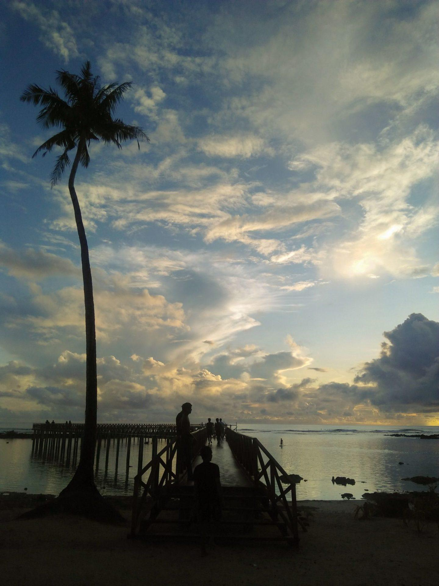
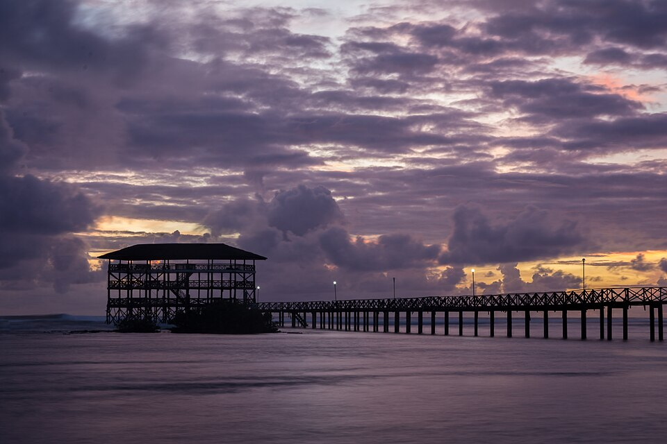
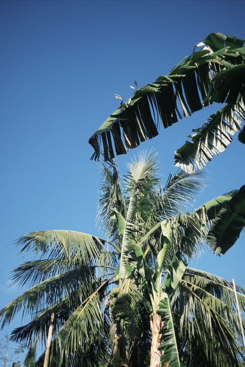
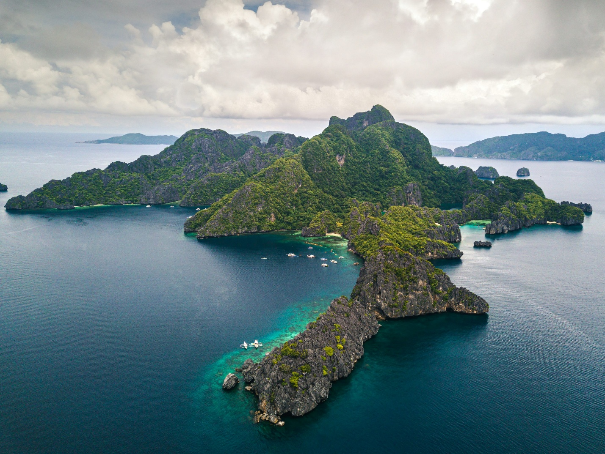

Most travelers come to Siargao chasing the perfect wave or the next Instagram-worthy photo. I arrived expecting the same, but I left with something far more meaningful.
Instead of rushing from one attraction to another, I found myself slowing down and discovering the quiet moments that truly define the island. At first, I felt the urge to visit every popular spot on the island. I even made a list of places I didn't want to miss. However, after a day or two, I realized that the moments I enjoyed the most weren't always the ones I had planned. Some of my favorite memories came from sitting at a small café, talking with friendly locals, or simply walking along the beach without checking the time. Those simple experiences made the trip feel more meaningful than following a packed itinerary.

One early morning, I sat near the shore as the sun painted the sky with shades of gold and orange. The only sounds were gentle waves meeting the sand, birds gliding overhead, and fishermen preparing their boats for another day at sea. The salty breeze, the scent of the ocean, and the peaceful rhythm of island life reminded me that Siargao's greatest beauty isn't just found in its famous destinations — it lives in the people, the environment, and the simple moments that often go unnoticed.
Siargao's greatest beauty isn't just found in its famous destinations — it lives in the people, the environment, and the simple moments that often go unnoticed.

As the days passed, I noticed how different life felt on the island. People weren't constantly rushing from one place to another, and that slower pace encouraged me to do the same. I started paying attention to little details that I would normally overlook — the sound of children laughing by the shore, the coconut trees moving with the wind, and the smiles of people greeting each other as they passed. Those ordinary moments helped me appreciate the beauty of being fully present.


As more visitors continue to discover this paradise, I realized that every traveler has a responsibility. Supporting local businesses, respecting community traditions, reducing plastic waste, and protecting the island's natural resources are not difficult choices; they are meaningful ways to ensure that Siargao remains beautiful for generations to come. Tourism should never come at the expense of the environment or the people who have cared for this island long before it became a global destination.
Responsible travel doesn't have to be a big sacrifice
Simple actions can make a positive impact — supporting the community while protecting the island so many people come to enjoy.
- Bring a reusable water bottle
- Throw away trash properly
- Choose local restaurants
- Buy handmade products from local vendors

Looking back, I realized that Siargao changed the way I think about traveling. Before this trip, I believed that the best vacations were the busiest ones. Now, I understand that the most unforgettable experiences often come from slowing down, appreciating the present, and allowing a place to teach you something beyond what you can see in photographs.
When I left Siargao, I didn't just bring home photographs or souvenirs. I carried with me a new perspective: that the best journeys are not measured by how many places we visit, but by how deeply we appreciate them. Siargao taught me that slowing down allows us to connect not only with nature but also with ourselves. That lesson is the greatest souvenir I could ever bring home.